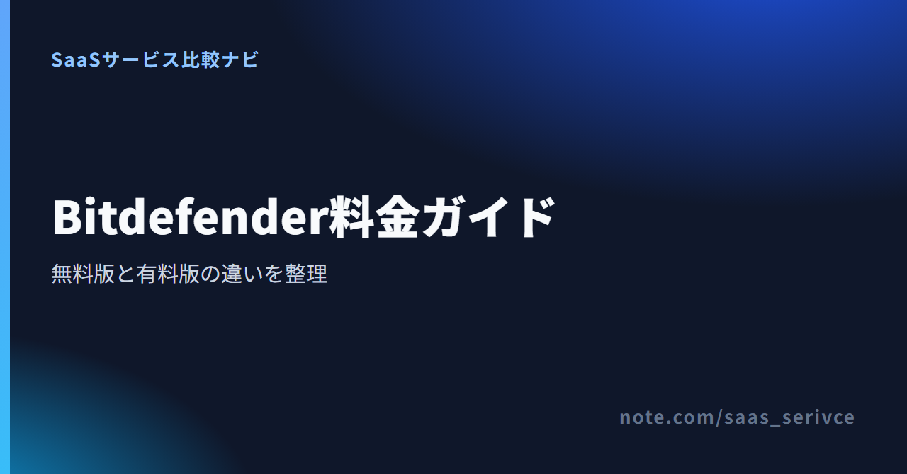
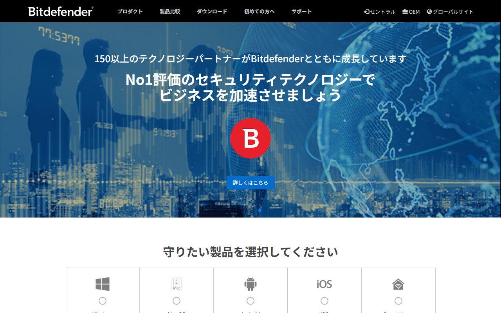
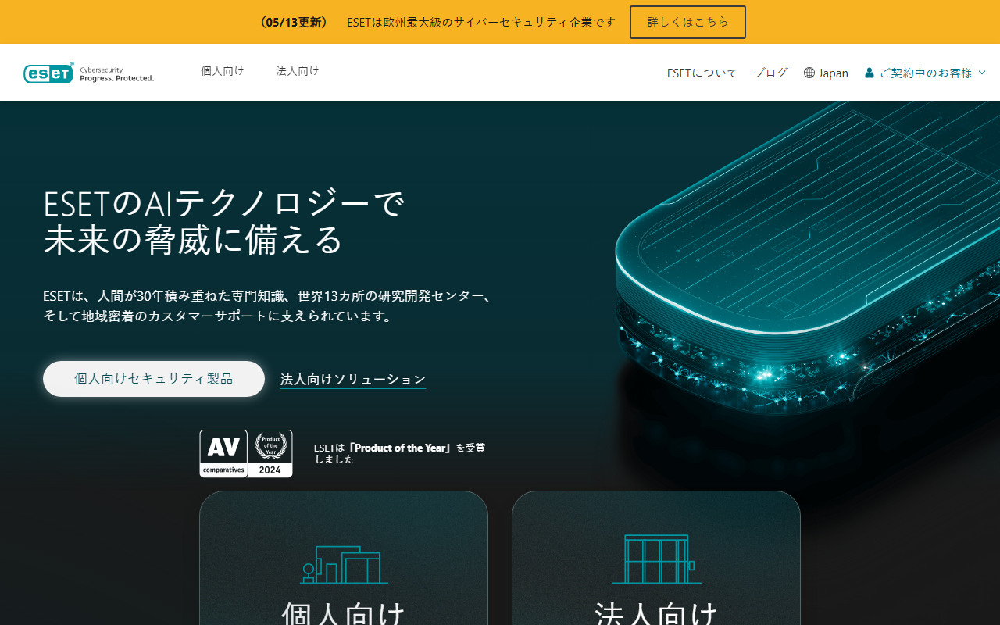
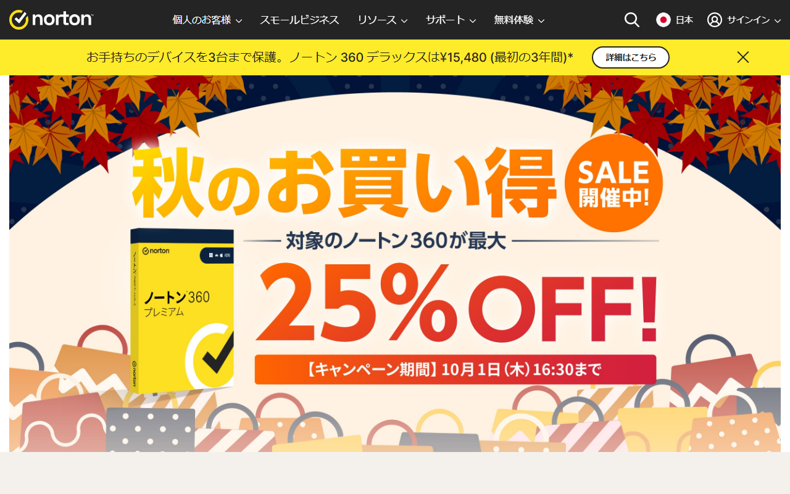

Bitdefenderは、パソコンやスマートフォンをマルウェアなどの脅威から守るセキュリティ製品です。期限なしの無料版と有料製品の無料体験では、使える期間も機能も異なります。
この記事では個人・家庭向け製品の料金と支払い条件を扱います。従業員の端末を一括管理する場合は、法人向け製品が対象です。
日本語公式サイトから、個人向け製品のラインナップと無料体験への入口を確認できます。
Antivirus Freeは期限なしの無料製品で、30日間無料体験では有料製品の機能を試せます。 どちらも無料で使えますが、対象機能と終了条件が違います。

Antivirus Free for Windowsは、Windows向けの基本保護を無料で使い続けられる製品です。隠れた費用や利用期限はありません。
Android向けには、別の無料製品があります。ただし、Total Securityと同じ総合プランを無料で使えるわけではありません。MacやiPhoneを含む複数のOSを一つの契約で守るなら、有料版が候補です。
Total Securityの無料体験では、製品版と同じ機能を30日間利用できます。申し込み時のクレジットカード登録は不要です。
30日後に失効するため、そのまま自動課金へ移る体験版ではありません。有料製品の機能が自分の端末構成に合うか、購入前に試したい人向けです。
無料版と無料体験の入口を見比べれば、対象製品の選び間違いを防げます。
個人・家庭向けでは、1〜3台ならAntivirus Plus、5台または25台ならTotal Security系が主な候補です。 VPNや個人情報の保護も重視する場合は、上位プランまで比べます。
掲載したのは、米国公式ストアに表示された初年度の税別価格です。円換算には1ドル=157円換算（執筆時点の目安。為替で変動）を使っています。
Antivirus PlusはMULTIPLATFORM製品です。対応OSはWindows、macOS、Android、iOSです。標準VPNは1台あたり1日200MBまで含まれます。
Total SecurityはWindows、macOS、Android、iOSに対応します。Individualは5台、Familyは25台までが対象です。どちらも標準VPNは1台あたり1日200MBまで使えます。
Premium Securityは、通信量無制限のVPNとパスワード管理を含みます。Ultimate Securityは、その内容にダークウェブ監視や漏えい通知などのデジタル個人情報保護を加えたプランです。
現行プランの対象OS、端末数、購入時に表示される価格を見比べられます。
Antivirus Free for Windowsが提供するのは、Windows向けの基本保護です。 Androidには別の無料版があり、複数OSを一つの契約で管理するなら有料版が候補になります。
無料版で使える機能と条件は次のとおりです。
Windowsパソコン1台から基本保護を始めるなら、まず無料版を検討できます。ただし、1台は利用上限ではありません。家庭向け利用規約では、無料製品は25デバイスまでのフェアユースと定められています。
Antivirus Free for Windowsでは、MacやiPhoneを同じ製品で守れません。Androidには別の無料版がありますが、複数OSを一つの契約でまとめるならTotal Security系が対象です。
VPNの利用量も選ぶ基準になります。Antivirus PlusとTotal Securityに含まれる標準VPNは、1台あたり1日200MBまで。より多く使うなら、上位プランの内容も比較します。
Windowsの基本保護だけなら、Antivirus Free for Windowsが候補です。 台数に加えて、OSと必要な追加機能で選び分けます。
次の条件がそろうなら、Antivirus Freeから検討できます。
Androidだけを守る場合は、別製品のAntivirus Free for Androidも候補です。MacやiPhoneを含む端末をまとめたい場合は、有料版と比べます。
まず端末数で基本プランを絞り、次にVPNと個人情報保護の要否を見れば、不要な上位機能を避けられます。
日本語公式の商品ページは円建て・税込、米国公式ストアはUSD・適用税別です。 購入経路によって表示条件が違うため、同じ価格として扱わないでください。
米国公式ストアの購入手順では、カードとPayPalが案内されています。カード決済時には、3D Secure 2.0の認証を求められる場合があります。
日本語公式の商品ページは円建て・税込表示です。ただし、日本発行カードとJCBへの個別対応は、公式公開情報に記載がありません。最終的な請求通貨と利用可能な決済手段は、購入画面の表示が基準になります。
購入が完了すると、請求書または支払領収書が請求先メールアドレスへ自動送信されます。PDFが必要な場合は、Bitdefender Centralまたは2Checkout（Verifone）の注文画面から取得できます。
公式公開情報には、この書類が日本の適格請求書に当たるとの記載はありません。税務処理が必要な場合は、税理士に確認してください。
この記事のドル建て料金は、米国公式ストアの初年度価格です。公式では初回購入向けの割引と案内されており、更新時は初年度より高くなる場合があります。
初年度の請求額と更新条件は、購入画面で分けて確認してください。
円建て価格は、日本語公式の商品ページで確認できます。購入画面へ進んだ後は、請求通貨と決済手段も見てください。
ESETとNortonは、Bitdefenderと購入条件が異なります。 同じ端末数の単純な価格比較ではなく、月額版、日本語UI、体験時の支払い登録などを含めて選びます。

ESETの価格は日本円の税込表示で、30日間の無料体験があります。Essentialは1台1年4,750円、1台3年8,070円、月額475円です。
年額だけでなく月額版も選べるため、年払いを避けて円建てで支払いたい人に向きます。ただし、無料体験にVPNは含まれません。

Norton 360 Standardの2台1年版は、公式ページによって初年度4,980円と5,480円で表示が異なります。2026年3月適用の更新価格は8,980円です。初年度価格は購入画面で確定してください。
日本語UIと日本語サポートがあり、30日間の体験版へ登録する際は支払い方法の指定が必要です。解約しなければ体験終了時に請求されるため、Bitdefenderのカード不要の無料体験とは条件が異なります。
Bitdefenderも日本語公式では円建て・税込表示です。一方、この記事のドル建て価格は米国ストアのものです。ESETやNortonの国内価格と比べるときは、購入地域、端末数、契約年数をそろえてください。
自動更新はBitdefender Centralから停止できます。 停止後も支払い済み期間の末日まで使えますが、停止と返金は別の手続きです。
自動更新を止めた時点では、製品の利用期限は変わりません。支払い済みの期間が終わるまでは利用できます。
初回購入または自動更新から30日以内は、返金申請の対象です。購入後30日以内なら、即時解約と返金を選べる場合もあります。
自動更新を止めただけでは返金されません。購入経路がBitdefender以外なら、販売元が定める条件も確認してください。
自動更新の停止と返金申請を分けて確認すれば、必要な手続きを取り違えずに済みます。
購入経路と更新手続きのうち、迷いやすい点を補足します。
日本語公式の商品ページは円建て・税込表示です。米国公式ストアではUSD・適用税別となり、最終的な請求通貨は購入地域や選択内容によって変わります。
Bitdefender Centralから自動更新を停止できます。停止後も支払い済み期間の末日までは利用可能です。
Windowsの基本保護ならAntivirus Free for Windows、複数OSを一つの契約で守るなら有料プランが候補です。 個人・家庭向けでは、端末数と追加機能の要否で絞れます。
Androidだけを守る場合は、別の無料製品もあります。複数OSをまとめる必要がなければ、無料版から検討できます。
申し込み前に確認するのは、支払い方法、更新条件、解約条件の3点です。初年度価格だけで決めず、次回更新まで含めて判断してください。
料金、端末数、更新条件を最後に見直してから申し込めば、必要な保護内容と契約条件のずれを防げます。